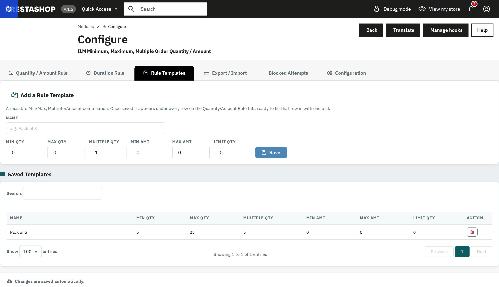

A reusable Min/Max/Multiple/Amount combination, saved once. After saving, it appears as an "Apply a template…" picker under every row on the Quantity/Amount Rule tab, ready to fill that row in with one click.

A "Pack of 5" template saved and listed, ready to be reused on any product row.